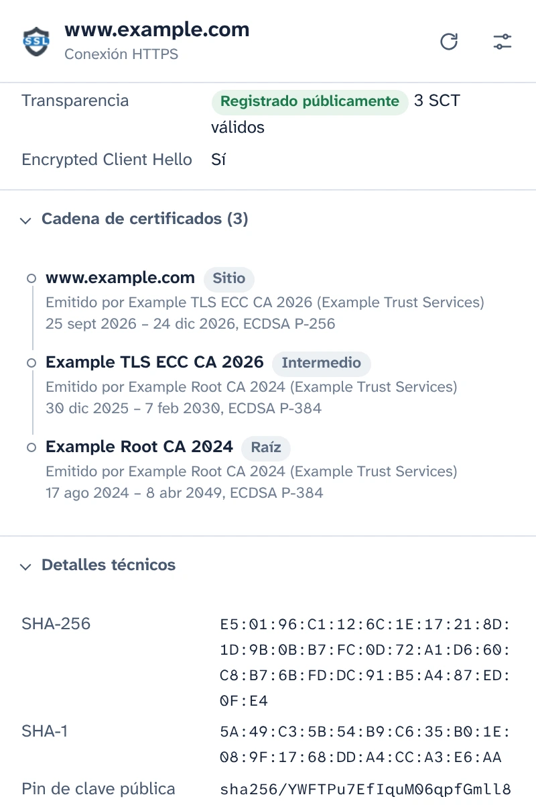
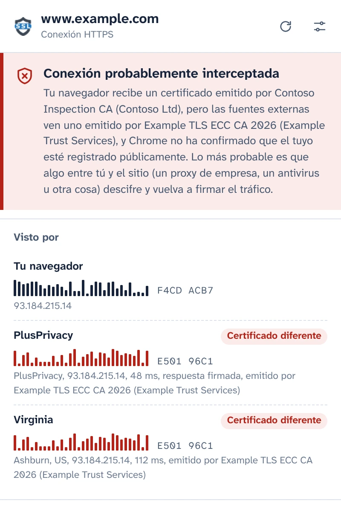
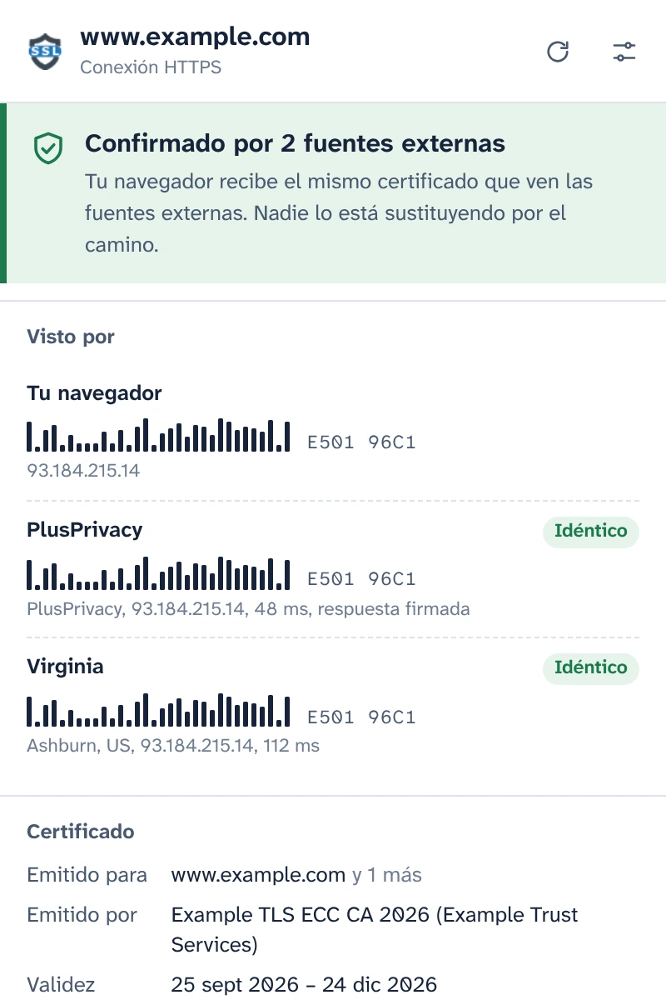
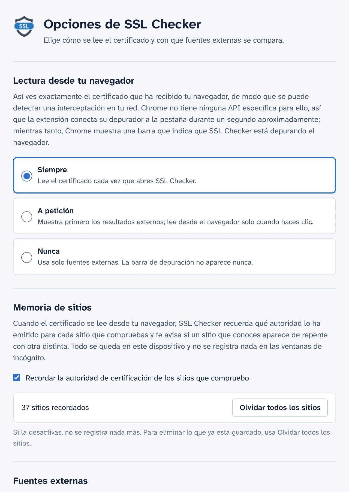

Mira el certificado que tu navegador ha recibido realmente
SSL Checker lee el certificado del sitio de tu pestaña directamente de Chrome y lo compara con lo que ven notarios independientes desde otros puntos de Internet. Si no coinciden, algo entre tú y el sitio lo está sustituyendo.
Gratis y de código abierto. Sin cuenta, sin analítica.
Confirmado por 2 fuentes externasConexión probablemente interceptada
Tu navegador recibe el mismo certificado que ven las fuentes externas. Nadie lo está sustituyendo por el camino.Tu navegador recibe un certificado emitido por Contoso Inspection CA, pero las fuentes externas ven uno emitido por Example TLS ECC CA 2026.
- Tu navegador E501 96C1F4CD ACB7
- PlusPrivacy IdénticoCertificado diferente E501 96C1
- Virginia IdénticoCertificado diferente E501 96C1
Todos los detalles de la conexión
Lo que Chrome ha recibido para esta pestaña, leído del propio navegador en lugar de volver a obtenerlo de un servidor.
- Nombres cubiertos, emisor, validez y días restantes, nivel de validación (DV, OV, EV)
- Versión de TLS, intercambio de claves con híbridos poscuánticos incluidos, cifrado y Encrypted Client Hello
- Estado de Certificate Transparency y las marcas de tiempo firmadas del certificado (SCT)
- La cadena completa, las huellas digitales y todas las extensiones. Copia el PEM o descarga la cadena.

Detecta la interceptación HTTPS
Los servidores proxy de empresa, el análisis HTTPS de los antivirus y los atacantes en redes Wi-Fi públicas funcionan igual: descifran tu tráfico y le entregan a tu navegador un certificado propio. La página parece normal y el candado sigue ahí.
SSL Checker pregunta al notario de PlusPrivacy, y a cualquier notario que añadas, qué certificado les muestra ese mismo sitio. Los notarios se conectan desde otros puntos de Internet, sin pasar por lo que haya en tu red, y se comparan las huellas digitales:
- El mismo certificado en todas partes: confirmado.
- El tuyo es distinto y no está registrado públicamente: conexión probablemente interceptada. SSL Checker indica qué autoridad emitió el sustituto y reconoce los productos de inspección conocidos.
- Las fuentes no coinciden entre sí: se indica como tal, junto con lo que puede significar cada caso.

Respuestas que nadie puede falsificar por el camino
Algo que intercepte tu tráfico también podría intentar responder en nombre de un notario. No lo conseguiría: el notario de PlusPrivacy firma cada respuesta con Ed25519, y SSL Checker comprueba la firma, un número aleatorio enviado con cada consulta y el sitio por el que ha preguntado. Una respuesta falsificada, reutilizada o redirigida se rechaza, y la ventana emergente indica que algo la ha modificado.
Instala tu propio notario
El notario es de código abierto: un pequeño servicio de Node.js para Docker, protegido contra avalanchas de solicitudes y contra solicitudes a redes privadas. Instálalo en cualquier servidor, añade su dirección y su clave en Opciones, y sus respuestas se comprobarán de la misma forma.

Tú decides cuándo se ejecuta el depurador
Chrome no tiene ninguna API de extensiones para obtener el certificado de una página cargada, así que SSL Checker conecta el depurador de Chrome a la pestaña durante un segundo aproximadamente mientras lo lee, y entretanto Chrome muestra su barra de depuración. En Opciones eliges cuándo ocurre:
- Siempre que abres la ventana emergente
- A petición, con un clic en la ventana emergente
- Nunca: solo se consulta a los notarios
Recuerda los sitios que compruebas
SSL Checker recuerda qué autoridad de certificación usa cada sitio y te avisa si un sitio que conoces aparece de repente con otra distinta, por ejemplo, en una red Wi-Fi nueva. Esta memoria se queda en tu dispositivo, nunca se usa en las ventanas de incógnito y se puede desactivar o borrar en Opciones.

Privacidad desde el diseño
- No se lee ni se envía nada hasta que lo aceptes en la ventana emergente.
- Solo el nombre de host y el puerto del sitio salen de tu dispositivo, en el cuerpo de una solicitud HTTPS a los notarios que usas.
- El notario de PlusPrivacy no guarda ningún registro de los sitios comprobados. Puedes desactivarlo o consultar solo notarios que gestiones tú.
- Sin analítica, sin seguimiento, sin cuenta. La memoria de sitios nunca sale de tu dispositivo.
- Este sitio web tampoco tiene analítica y no carga nada de otros servidores.
POST /v1/cert
Content-Type: application/json
{
"host": "www.example.com",
"port": 443,
"nonce": "Xq3MpTb0vR9kLs2eWn5yZA"
}